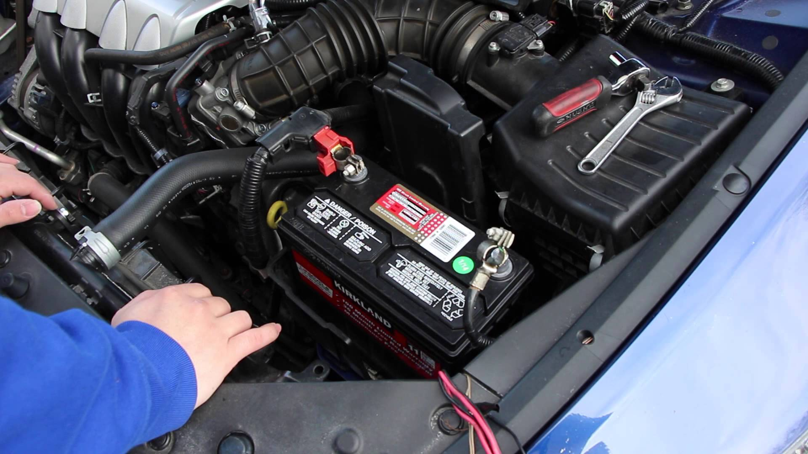
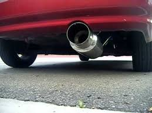

If you would like a quote please call 1-800-766-2777
We can do maitence to you car which includes several different things some of which are oil changes and engine maitence. We can change fluids and flush fluids. We can keep your car running in tip top shape. Bobzin motorsports is anything automotive!

This is just one example of what our shop can do for your car as far as maitence goes. As a shop we can take your battery and check it's voltage and make sure it's running at full potential, if it's not we can change your battery for you!
We can do Mods to you car which includes several different things some of which are tinting your windows to provide uv ray protection and we also can mod your car with any kind of light assortment. We can provide you with a new headlight assembily or tinted taillight assembily. Bobzin Motorsport is anything automotive!

This is just one example of what our shop can do for your car as far as Mods goes. We can give you an aftermarket exhuast set for your car to make it sound louder (or faster). We can customize your car for you!